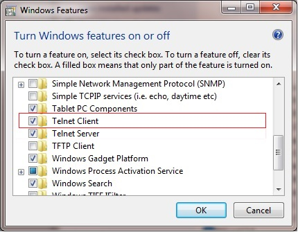
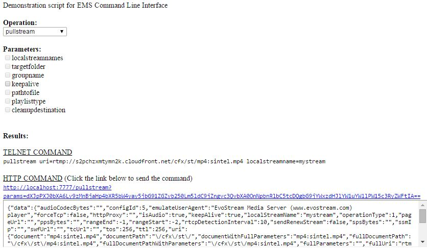

Run-Time API
The EMS provides a bi-directional RESTful API for interacting with it both manually and progromaticallyprogrammatically. It allows you to write simple web services and scripts to extend and build your own logic on top of the EMS.
The API is composed of two parts. The calls you can make into the EMS is our API. The second part is the Event Notification System which calls you back when stuff happens with the EMS.
Using these two halves of the API you can perform complex load balancing, create custom stream work flows, encrypt and protect your stream traffic and more, all on the fly, and with simple and efficient web services or local scripts.
EvoStream provides a set of sample web services that leverage the API. These web services can be found on our website and can be used directly or leveraged to start your own project. Download them here: https://evostream.com/software-downloads/
Accessing the Run-Time API
Manual Command Line
This ASCII-based interface is often the first interface used by users. It can be accessed easily through the telnet application (available on all operating systems) or through common scripting languages.
To access the API via the telnet interface, a telnet application will need to be launched on the same computer that the EMS is running on. The command to open telnet from a command prompt should look something like the following:
telnet localhost 1222
Note:
Telnet may need to be enabled using Windows® operating systems. To do this, go to the Control Panel -> Programs -> Turn Windows Features on and off. Turn the Telnet Client program on.

Please also note that on Windows®, the default telnet behavior will need to be changed. The local echo and new line mode should be set for proper behavior. Once telnet is launched, exit the telnet session by typing CTRL+]. Then enter the following commands:
set localecho
set crlf
To return to the Windows® telnet session, press Enter or Return key.
Once the telnet session is established, type out the desired commands which will be immediately executed on the server after the Enter/Return key is pressed.
An example of a command request and response from a telnet session would be the following:
Request:
version
Response:
Command entered successfully!
Version
banner: EvoStream Media Server (www.evostream.com) version 1.7.0. build 4153 with hash: 4ab5d9145ae3b4b3dfeb3af5ce6890f015824974 on branch: develop - PacMan|m| - (built on 2015-11-06T08:24:32.000)
buildDate: 2015-11-03T01:50:37.000
buildNumber: 4153
codeName: PacMan|m|
releaseNumber: 1.7.0
ASCII JSON CLI
Accessing the API over the same Telnet interface, but by using the port 1112 will yield the same results as Manual Command Line, but the results will all be returned formatted in JSON. This is very convenient for CGI and BASH scripting against the EMS API.
Please note that the first character returned by the JSON response is the LENGTH of the JSON payload, allowing you to allocate properly sized structures at runtime.
An example of a command request/response from a telnet session would be the following:
telnet localhost 1112
Request:
version
Response:
{"data":{"banner":"EvoStream Media Server (www.evostream.com) version 1.7.0. build 4153 with hash: c50ee04ec98886ed1f54d599355e04346bf50df0 on branch: develop - PacMan|m|-(built on 2015-11-03T01:50:37.000)","branchName":"develop","buildDate":1446515437,"buildNumber":"4153","codeName":"PacMan|m|","hash":"c50ee04ec98886ed1f54d599355e04346bf50df0","releaseNumber":"1.7.0."},"description":"Version","status":"SUCCESS"}
HTTP
To access the API via the HTTP interface, simply make an HTTP request on the server using any browser with the command to be executed. By default, the port used for these HTTP requests is 7777. The HTTP interface port can be changed in the main configuration file used by the EMS (config.lua).
A general http format request would be the following:
http://[EMS IP]:7777/[API]
An example of a command request and response from an HTTP session would be the following:
Request:
http://localhost:7777/version
Response:
{"data":{"banner":"EvoStream Media Server (www.evostream.com) version 1.7.0. build 4153 with hash: 4ab5d9145ae3b4b3dfeb3af5ce6890f015824974 on branch: develop - PacMan|m| - (built on 2015-11-06T08:24:32.000)","branchName":"develop","buildDate":"2015-11-06T08:24:32.000","buildNumber":"4176","codeName":"PacMan|m|","hash":"4ab5d9145ae3b4b3dfeb3af5ce6890f015824974","releaseNumber":"1.7.0."},"description":"Version","status":"SUCCESS"}
All of the API functions are available via HTTP, but the request must be formatted slightly different if parameters are included. To make an API call over HTTP, the parameters to be used should be in base64 format.
http://IP:7777/[API]?params=([base64 encoded parameters])
Sampling a pullstream command:
(firstParam=XXX secondParam=YYY…)
(uri=rtsp://localhost:5544/vod/mp4.bunny.mp4 localStreamName=bunny)
-
Type in the parameters first:
-
Convert the parameters using a base64 encoder:
Converted parameter:
dXJpPXJ0c3A6Ly9sb2NhbGhvc3Q6NTU0NC92b2QvbXA0LmJ1bm55Lm1wNCBsb2NhbHN0cmVhbW5hbWU9YnVubnkp -
The corresponding request in HTTP format would be:
http://localhost:7777/pullstream?params= dXJpPXJ0c3A6Ly9sb2NhbGhvc3Q6NTU0NC92b2QvbXA0LmJ1bm55Lm1wNCBsb2NhbHN0cmVhbW5hbWU9YnVubnkp -
Base64
A group of similar binary-to-text encoding schemes that represent binary data in an ASCII string format by translating it into a radix-64 representation. There are available base64 encoders online to get the encoded result.
- PHP and JavaScript
PHP and JavaScript functions are also provided. These functions simply wrap the HTTP interface calls and can be found in the EMS Web UI directory.
- Securing the API
By default, the ASCII API is protected, and access from any outside computer is prohibited. This can of course be modified within the config.lua file, but keeping this restriction is recommended for maintaining server security.
The HTTP based API is also restricted by default to only local access. However, unlike the ASCII API interface, there are often good reasons to expose the HTTP API. To secure the HTTP based API in this case, you will enable Proxy Authentication on the EWS (details found in the EWS section of this doc). This will enforce that a valid username and password be provided for each and every API call made, ensuring on authorized access to the EMS API.
Configuring and Receiving Event Notifications
EMS generates notifications based upon events that occur at runtime. These events are formatted as HTTP calls and can be delivered to any address and port desired.
Event Notifications are enabled by default and are configured to send to the local web services provided within your EMS installation. The Web Services are disabled by default, and so do not take any action on the events. Please review the EvoStream Web Services documentation for instructions on enabling and working with each of the web services.
Additional Event Notification destinations can be enabled (or disabled) by modifying the EMS config file: config.lua.
To enable Event Notifications you will need to Enable/Uncomment the eventLogger section of the config.lua file. Comments in LUA are specified by either a -- for a single line, or denoted by a --[[ to start a comment block and a ]]-- to end a comment block. By default the eventLogger section is commented out using block style comments, so you will need to remove both the --[[ and ]]-- strings. See the Configuration Files section for more information.
Sinks
Sinks are defined as “a specific destination for events” and can be of two types: “file” and “RPC”. File sinks simply write events to a file, as defined by the “filename” parameter. This works much like a system logger. Users can choose the format of the output between JSON, XML, W3C and text. JSON and XML will be formatted as JSON and XML respectively and each event will be written to a single line. This is done for ease of parsing. The W3C formatted file is compliant with the requirement of having space or tab-delimited columns. In addition, it has a header line that is commented out (#) that indicates the names of the columns. As with JSON and XML, each event is also written to a single line. The Text format writes to the event file in a way that is easy to read, where events are on multiple lines. The file sink is off by default, but can be turned on by creating the sink in the config.lua file.
To receive HTTP based Event Notifications, an RPC type sink must be defined (and is by default). The URL parameter defines the location that will be called with each event. The URL can be a specific web service script or just an IP and port on which service is listening to that can interpret these events. RPC sinks have the option of one of three serializer types, or in other words, the way the data will be formatted within the HTTP post: JSON, XML, XMLRPC. XMLRPC events are formatted as XML using a traditional XML-RPC schema. The XML serializer type uses an XML schema that is more condensed and specific to the EMS Event Notification System. The JSON serializer type has the same schema as XML, but is formatted as JSON.
For any Sink, users can define an array of enabledEvents. When this array is present, only the events listed will be sent to that sink. If this array is not present, all events will be sent to the sink. The full list of events can be found later in this document.
API Definition
The EMS Run-Time API is fully defined in the document: API Definition.pdf
This document can be found in the documents folder of the EMS package.
Please review this document and use it as a reference as you explore the EMS Run-Time API!
My First Call API
We will start by retrieving an external stream that we can then use to playback. First we will pull in a test stream. The source URI is:
rtmp://s2pchzxmtymn2k.cloudfront.net/cfx/st/mp4:sintel.mp4
We will start by retrieving an external stream that we can then use to playback. First we will pull in a test stream. The source URI is:
For simplicity, we will be using the Command Line interface to send API commands to the server. We will use the telnet utility (available on all operating systems) to do this. Learn more about using telnet to connect to EMS in the “Accessing the Run-Time API” section above in this document.
-
Run the EMS. (See Starting the Server)
-
Open a telnet session to the EMS
To pull the stream, type the command below on the telnet console:
pullstream uri= rtmp://s2pchzxmtymn2k.cloudfront.net/cfx/st/mp4:sintel.mp4 localstreamname=TestStream1This will tell the EMS to go get the test stream and name it
TestStream1. -
Now that the stream is a part of the EMS, we will want to play it. You can either use the EMS UI, or we can use an external player such as VLC. You can use any of the following URL’s to play it back using “Network Stream”:
rtmp://localhost/live/TestStream1 rtmp://localhost/live/TestStre
User Defined Variables
While the EMS provides an extensive set of API functions, there may be times where the variables provided are not sufficient, or where you may need extra information to be associated with individual streams. To support these needs, the EMS API implements User Defined Variables. User Defined Variables can be used with any API function where information is maintained by the EMS (i.e. pulling a stream, creating a timer, starting a transcode job, etc.).
To specify a User Defined Variable, you simply need to append an underscore (_) to the beginning of your variable name. The User Defined variables are reported back whenever you get information about the command: listStreams, listConfig, Event Notifications, etc.
Some common use cases for User Defined Variables are as follows:
setTimer value=120 _streamName=MyStreamsetTimer value=120 _streamID=5
Setting a timer to stop a stream after a set period of time
pullstream uri=rtmp://192.168.1.5/live/myStream localstreamname=test1 _myID=5 _myName=secretSquirrel
These commands will fire a timer event after 120 seconds with the set stream name or stream id respectively.
-
Attach a custom identifier to a local stream
pushstream uri=rtmp://192.168.1.5/live/myStream localstreamname=test1 _myID=5 _myName=secretSquirrel
Set a custom value on a pushed stream
EMS Demo.html
Provided along with the EMS is a simple html page which helps users to formulate simple API commands. The page can be found at ../demo/emsdemo.html on the installed directory of EMS.
Simply double click the html file to open it in a browser.
